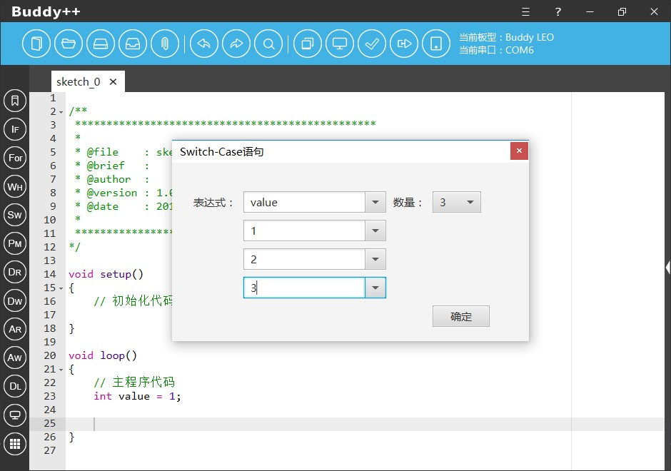
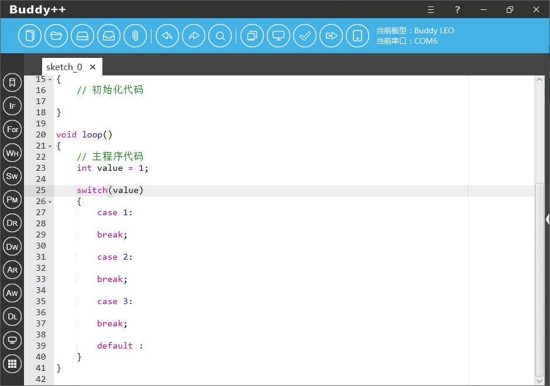

如果程序中涉及到较多的分支仅使用If…Else语句会显得冗长而且运行会较为低效，这时我们一般使用Switch…Case语句实现程序的分支。Buddy++通过辅助工具协助初学者使用基于Switch…Case语句的分支结构编程。
使用时开发者点击左侧工具栏纵向第五个图样为“SW”简写的图标即可弹出“Switch…Case条件分支”工具。


在对话框中，我们首先通过右侧的下拉菜单选择条件分支的数量，默认下选择的是3，目前工具最多支持10个条件表达式，如果条件数量超出范围开发者可以自行通过编码的方式补充。选择条件数量后，左侧的数值列表会动态更新，我们需要在顶端的表达式中选择即将进行条件判断的变量，然后根据对应的条件选择控制分支的数值，完成后点击确定按钮工具将会在代码区指定区域生成基于Switch…Case语句的分支代码片段。